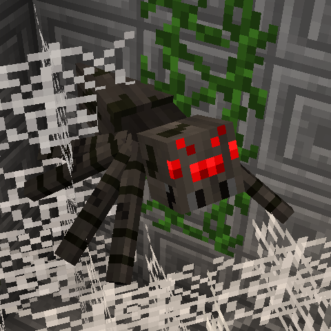

Zombie
Zombies have iron armour and an enchanted iron sword.
They also get 2 healing potions so even against a fully geared out player, a Zombie who gets the jump on them stands a pretty good chance of winning a fight.
Never engage a Zombie if you are under geared, instead fight from range or as a team!
A Zombie does not need to kill everyone because even a single kill means another monster!
Skeleton
Skeletons have an enchanted bow and leather armour. They have fire resist potions and if you do not have the gear, stay behind your walls as they can kill unarmoured targets very easily.
They are easy to kill once you are geared, but can still do a lot of damage in the early to mid game if you are not careful.
Creeper
Creepers have leather armour and a single piece of gunpowder.
If you left click with the gunpowder you blow up.
You can kill weaker armoured targets, but diamond armoured players will not die to even a direct hit unless wounded.
Creepers sometimes do not need to kill to be useful as they can simply blow open massive holes in walls that if not repaired can allow other monsters to pour in!
Wolf
Wolves are the heavy hitters of monsters.
As a Wolf, you are given 5 wolf eggs and a stack of bones as well as two swords.
One is a diamond sword with sharpness 2 and the other is a gold sword with knockback 2 and flame 2 allowing you to be both aggressive and defensive in one on one combat.
In combinations with your wolf pack, Wolves are a pain as to tell which wolf is the player and which are decoys.
Wolves are weaker than Zombies due to lack of healing potions, and only chain armour, but a wolf who sneaks up on even the most geared out of players, can take them down easily if they are not quick to react!
Spider

Spiders have a lot of tricks up their sleeves and you will never know by reading this what “watch out for their poisons” means until you see it in game.
They have triple poisons; one that impairs your vision, another that makes you dizzy, and lastly the old fashioned poison damage.
When combined you become completely incapable of seeing anything allowing the spider to keep poisoning you and slowly kill you.
Spiders also have increased movement speed and jump height allowing them to jump over 5 block high walls.
They are also equipped with vines allowing them to build ladders for the other monsters to get into the keep!
Cougar
As a cat, the Cougar moves fast and jumps high, and has two abilities. The first ability drains the dwarfs hunger, so they cannot regenerate health. The second makes dwarfs drop their sword.
Iron Golem
Iron Golems are the siege units for the monsters.
They move at a very slow speed and cannot jump up blocks.
This means without the support of a team mate, you are forced for the most part to tunnel your way slowly to the dwarfs base.
They are however insanely hard to kill and one shot anything in melee range.
Iron Golems have two abilities; one allows them to smash the blocks in front of them flattening the area, and the other allows them to leap once every 15 seconds great heights in the air.
The leap can be used to get out of holes you fall into or even jump on a dwarf who thinks they are far enough away.
The flaw of an Iron Golem is that their armour breaks quickly, and focus firing an Iron Golem can make them very weak.
However, the ability to create tunnels as well as tank damage makes them a massive threat to the dwarfs and a huge distraction for the rest of the team.
Hungry Pig
As a baby pig, you need to eat the stone walls of the dwarf base to grow. Gain experience by eating and once you become level 7 you can transform into the Hungry Pig! You now get an enchanted stone sword, but you still have weak armour. If you keep eating you can transform into a Zombie Pigman, without the ability to eat anymore, but with new iron armour.
Broodmother
The Broodmother is a silverfish who does what silverfish do best; make more silverfish.
As a Broodmother, your goal is to get close enough to the dwarf walls and start laying eggs.
Once a couple are laid down, you begin to roar, wakening them up.
A Broodmother who is not quickly dealt with, will cause massive amounts of silverfish to spawn inside the dwarfs base, but the real threat is the amount of damage she can cause to walls and the friendly fire dwarfs will deal to each other trying to kill silverfish in a small space.
Crow
The Crow is the only flying monster.
As a Crow, you can fly down and snatch dwarfs and drop them of a cliff.
A Crow has no other attacks, but deal damage by dropping dwarfs off places.
Enderman
The Enderman have no armour and 2 abilities. One allows them to teleport insane distances once every 20 seconds and the other to turn themselves into a portal allowing all monsters to teleport to the Enderman.
When doing so the sky turns dark and a lightning bolt will constantly strike the Enderman every time it reinforces the portal to allow more monsters to teleport.
The Enderman will also slowly be able to spawn an assortment of normal monsters and drop them down from the portal.
Dwarfs can use the end stone being summoned to shut down the portal, but the Enderman can reopen it.
Dwarfs have to find a vantage point to try and kill the Enderman, or try climb up and take him down.
The Enderman portal can quickly shift a game into a downward spiral for the dwarfs if it is not quickly dealt with.